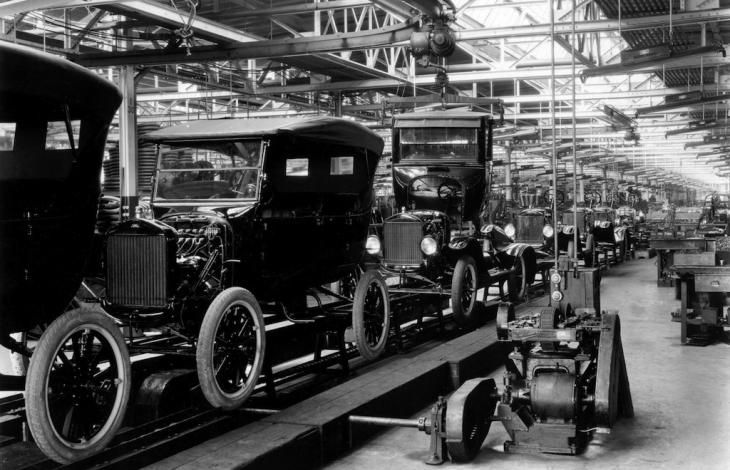
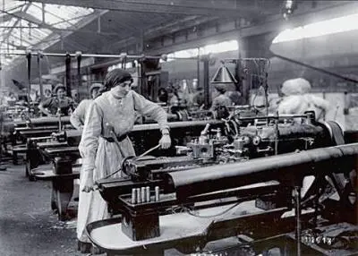
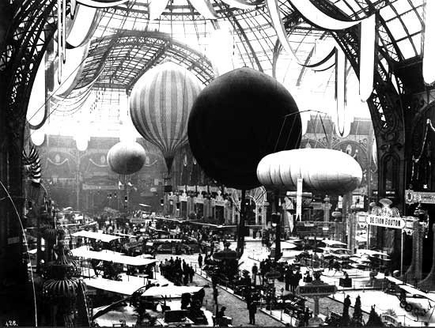

Avanços Tecnológicos e Científicos
Eletricidade, transportes, medicina e comunicação transformam o cotidiano nas metrópoles.



1871 — 1914
Eletricidade, transportes, medicina e comunicação transformam o cotidiano nas metrópoles.